소식
구조 현장 소식과 구조된 아이들의 근황, 언론 보도, 후원금 사용 내역을 전합니다.
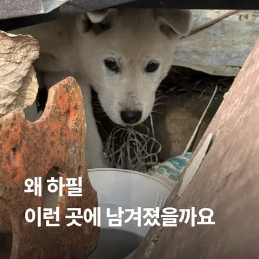
구조 소식왜 하필 이런 곳에 남겨졌을까요위액트 게시판 구조 소식세이버즈프로젝트 평택시보호소
구조 소식세이버즈프로젝트 평택시보호소 구조 소식마포구 불법 신종 펫숍
구조 소식마포구 불법 신종 펫숍 구조 소식화성 방치견
구조 소식화성 방치견 구조 소식평택 방치견
구조 소식평택 방치견 구조 소식혹시나 했는데 역시나였습니다.
구조 소식혹시나 했는데 역시나였습니다. 구조 소식"개"고생한 밤
구조 소식"개"고생한 밤 구조 소식화천방치견
구조 소식화천방치견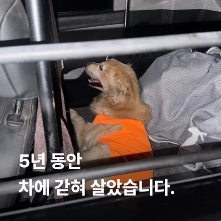
구조 소식구리 방치견 구조 소식괴산방치견
구조 소식괴산방치견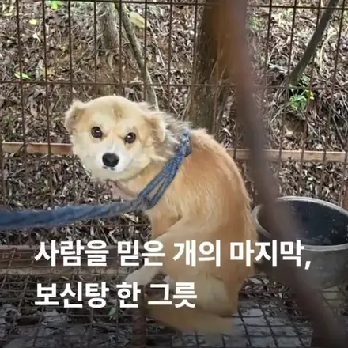
구조 소식전남개농장 구조 소식포천 불법 번식장
구조 소식포천 불법 번식장 구조 소식성남불법개농장
구조 소식성남불법개농장 구조 소식성남 불법개농장
구조 소식성남 불법개농장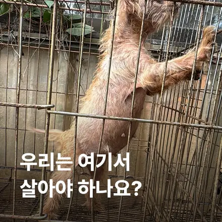
구조 소식문경 방치견 구조 소식순천불법도살장2
구조 소식순천불법도살장2 구조 소식화성봉담개농장2
구조 소식화성봉담개농장2 구조 소식성남개농장
구조 소식성남개농장 구조 소식순천불법도살장
구조 소식순천불법도살장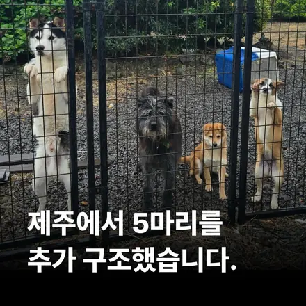
구조 소식세이버즈프로젝트 제주시보호소 구조 소식제주 방치견
구조 소식제주 방치견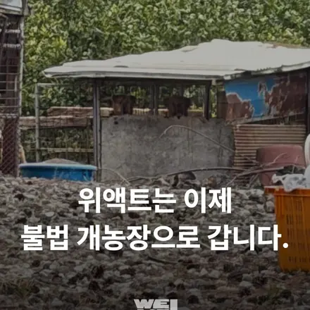
구조 소식제주 불법개농장 구조 소식제주 쓰레기집
구조 소식제주 쓰레기집 구조 소식성북구 애니멀호더
구조 소식성북구 애니멀호더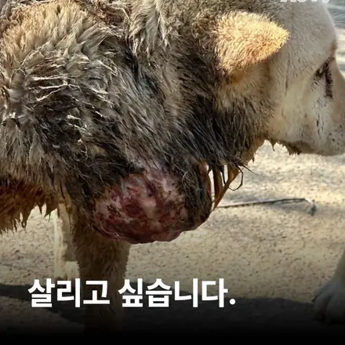
구조 소식김해 종양방치백구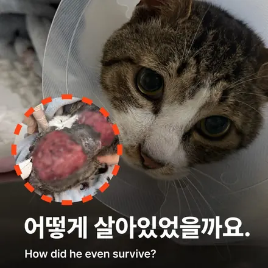
구조 소식합천 피부고양이 구조 소식화성 불법도살장
구조 소식화성 불법도살장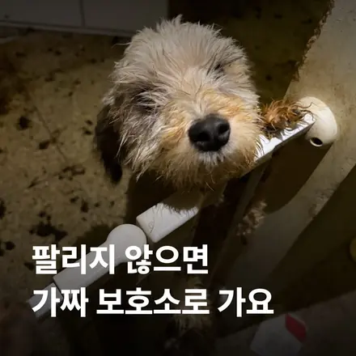
구조 소식평택 펫숍방치견 구조 소식영월 방치견
구조 소식영월 방치견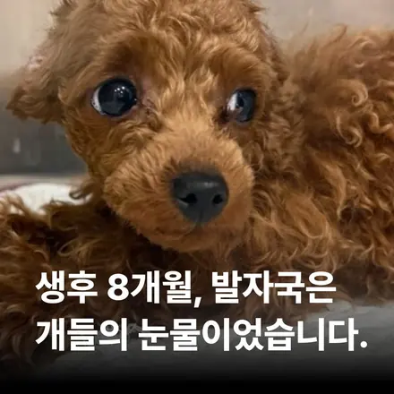
구조 소식평택 오피스텔방치견
더 이전의 구조 소식은 위액트 게시판에 있습니다.
 구조 동물 소식1,111원~🤎 사랑의 빼뺴로 릴레이위액트 게시판
구조 동물 소식1,111원~🤎 사랑의 빼뺴로 릴레이위액트 게시판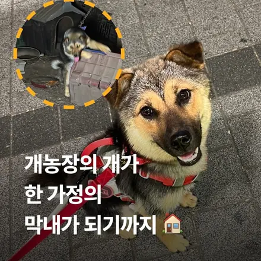
구조 동물 소식개농장의 개가 한 가정의 막내가 되기까지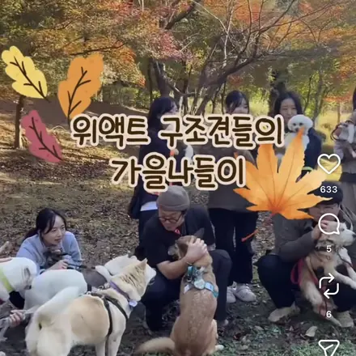
구조 동물 소식위액트 구조견들의 가을 나들이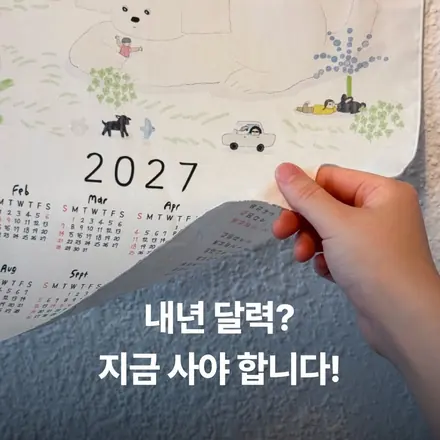
구조 동물 소식위액트 구조견들의 가을 나들이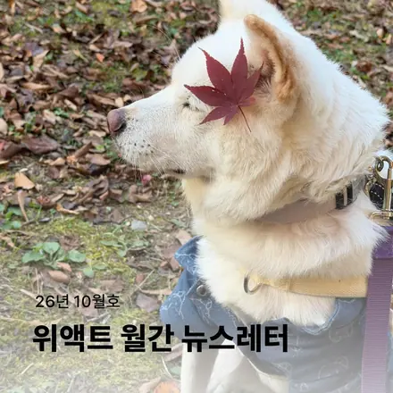
구조 동물 소식위액트 10월호 월간 뉴스레터 구조 동물 소식헤임이의 외박일기
구조 동물 소식헤임이의 외박일기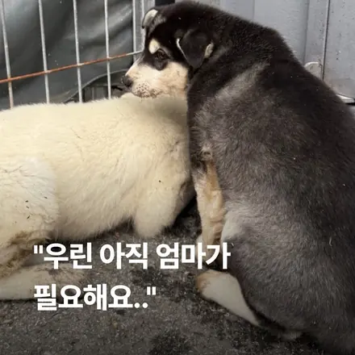
구조 동물 소식"우린 아직 엄마가 필요해요.." 구조 동물 소식GOODBYE 위액트 입양파티 in 성수
구조 동물 소식GOODBYE 위액트 입양파티 in 성수 구조 동물 소식위액트 입양파티, 사지않을개 라인업 대공개!
구조 동물 소식위액트 입양파티, 사지않을개 라인업 대공개! 구조 동물 소식제발 늙지마
구조 동물 소식제발 늙지마 구조 동물 소식누룽지 꼬순내가 인간에게 미치는 영향
구조 동물 소식누룽지 꼬순내가 인간에게 미치는 영향 구조 동물 소식이 개를 위해 후원을 부탁드립니다.
구조 동물 소식이 개를 위해 후원을 부탁드립니다.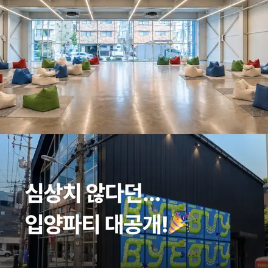
구조 동물 소식심상치 않다던... 입양파티 대공개! 구조 동물 소식수상하개 따라다니는 스.토.개
구조 동물 소식수상하개 따라다니는 스.토.개 구조 동물 소식위액트 입양센터 신입견 행동수칙
구조 동물 소식위액트 입양센터 신입견 행동수칙 구조 동물 소식기적이란 이름으로 살았던 시간만 기억하길...
구조 동물 소식기적이란 이름으로 살았던 시간만 기억하길... 구조 동물 소식뜰망을 벗어나 다시 시작된 걸음
구조 동물 소식뜰망을 벗어나 다시 시작된 걸음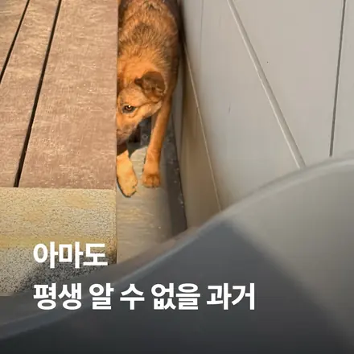
구조 동물 소식아마도 평생 알 수 없을 과거. 구조 동물 소식언제나 햇살같던 골든이에게...
구조 동물 소식언제나 햇살같던 골든이에게... 구조 동물 소식재빠르게 2027 달력 선점
구조 동물 소식재빠르게 2027 달력 선점- 구조 동물 소식사람을 가장 사랑한 개, 사람에게 가장 외로웠던 개
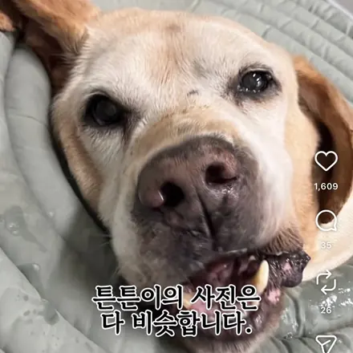
구조 동물 소식튼튼이의 사진은 다 비슷합니다. 구조 동물 소식반려견과 함께하는 가을 나들이 펫티켓
구조 동물 소식반려견과 함께하는 가을 나들이 펫티켓 구조 동물 소식살아남은 아이들을 후원해주세요
구조 동물 소식살아남은 아이들을 후원해주세요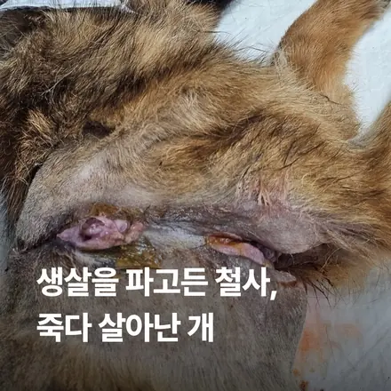
구조 동물 소식생살을 파고든 철사, 죽다 살아난 개 구조 동물 소식세상에서 가장 착한 리트리버에게
구조 동물 소식세상에서 가장 착한 리트리버에게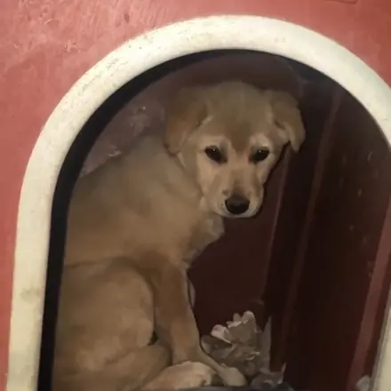
구조 동물 소식내 집을 소개합니다 구조 동물 소식이번 성수 입양파티, 뭔가 심상치 않다...👀
구조 동물 소식이번 성수 입양파티, 뭔가 심상치 않다...👀 구조 동물 소식수많은 다정함으로 건져 올린 숨을 지켜주세요
구조 동물 소식수많은 다정함으로 건져 올린 숨을 지켜주세요 구조 동물 소식이렇게까지 커질줄 몰랐어요
구조 동물 소식이렇게까지 커질줄 몰랐어요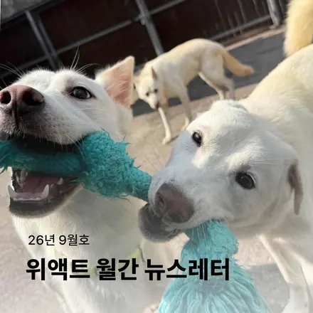
구조 동물 소식위액트 9월호 월간 뉴스레터 구조 동물 소식가족을 찾아 떠난 길에, 평생 가족을 만난 개
구조 동물 소식가족을 찾아 떠난 길에, 평생 가족을 만난 개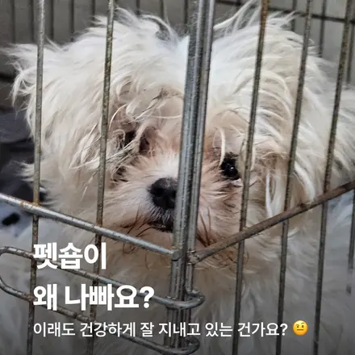
구조 동물 소식펫숍이 왜 나빠요? (2) 구조 동물 소식작을수록 비싼 곳과, 클수록 비싼 곳.
구조 동물 소식작을수록 비싼 곳과, 클수록 비싼 곳.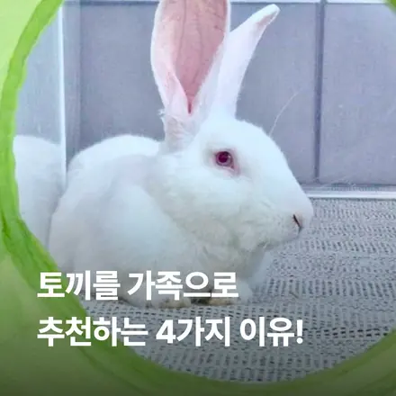
구조 동물 소식토끼를 가족으로 추천하는 4가지 이유! 구조 동물 소식금수저, 은수저, 흙수저... 선택 받는 개들의 삶
구조 동물 소식금수저, 은수저, 흙수저... 선택 받는 개들의 삶
더 이전의 구조 동물 소식은 위액트 게시판에 있습니다.
- No.72권상우♥손태영, 안락사 위기 유기견 입양 이어 또 선행..300평 행사 공간 후원스포츠조선 · 2026.11
- No.70뼈 드러난 몸에 거대 종괴…콘크리트 감옥서 구조된 '희망이'뉴스1 · 2026.08
- No.69"차 안에 누워있다" 제보…폭염 속 축 늘어져 가쁜 숨SBS
- No.68손태영♥권상우, '안락사견' 임보끝 새 가족 입양.."대가족 됐다"(Mrs.뉴저지)OSEN · 2026.08
- No.67“모견 살아있을 때 개복” 화성 번식장 대표 1심서 징역형세계일보 · 2026.07
- No.66위액트와 함께 쓰레기에 갇힌 10마리 구조기일요시사
- No.65[언론 보도] 입양 보냈더니 “잡아먹었다?”…공공기관서 사라진 강아지 가족2026.02
- No.64<일요초대석> 위액트 함형선 대표 & 전혜수 활동가일요시사
- No.63"너 때문에 죽는 거야"...던져진 반려견, 다시 소유자에게 돌아갔 다뉴스1 · 2025.12.31
- No.62<특집기획> 구조견 입양으로 다시 찾은 행복일요시사 · 2025.12.29
- No.59"가정견이라 믿었는데"…아파트 베란다에 숨어든 '변종 공장' [강아지 공장 잔혹사④]파이낸셜뉴스 · 2025.12
- No.57쓰레기 뒤지고 고인 물 마시며 강아지들 지켜낸 엄마개 '보름'한국일보 · 2025.12
- No.55<위액트 공동기획> ‘바로’ 새 가족을 기다립니다일요시사
- No.53'아기 지켜주는 든든한 형아'…조회수 320만 돌파한 반려견뉴스1
- No.52트럭 뒤에 매달려 가던 개 '지프'가 구조 뒤 보여준 변화한국일보
- No.49산불 피해 동물 돕는 특별한 티셔츠·양말…해피빈 펀딩 개설뉴스1 · 2025.07.24
- No.48포대 속 꿈틀거리던 생명…사람이 좋은 믹스견 남매한국일보
- No.43"어미 개 배 갈라 새끼 꺼냈다"…1400마리 '개농장' 운영자들 첫 재판서울경제 · 2025.06.19
- No.42[멍멍냥냥] “겨우 살렸는데 가족이 없네” 홀로 덩그러니 남은 산불 피해 동물들헬스조선 · 2025.06.02
- No.41“저런 사람이 개를 키워?” 눈 속 버려진 유기견 만난 날 [개st하우스]국민일보
- No.40반려견이 길고양이 물어 죽이는데…방치한 견주 형사 고발2025.04
- No.36목줄 끊어줬는데도…산불 속에서 주인 기다리다 화상 입은 황구뉴스1 · 2025.03
- No.35산불 현장에 남겨진 동물들…"목줄 풀어주고 우리 문 열어주세요"경기일보 · 2025.03.26
- No.34<일요초대석> 동물구조단체 위액트 함형선 대표일요시사 · 2025.03.05
- No.33[뉴블더] 빌라 2층 창문에서 강아지 냅다 던져…"겁주려고"SBS · 2025.02.14
- No.32번식 지옥 속 실명에 탈장까지…20년간 눈감아 준 부산시[댕냥구조대]이데일리 · 2024.10.19
- No.31“냉장고엔 죽은 개들이”…가정집서 강아지 30마리 구조2024.09
- No.30강아지 때려 경찰 다녀간 날…"또 때려야지"머니투데이 · 2024.07
- No.29"재개발 지역 화석인 줄"…심한 피부병 앓다 구조된 강아지뉴스1 · 2024.06.03
- No.28"비숑 290마리 살려주세요" 합법 번식업자가 동물단체에 SOS친 이유한국일보 · 2024.03.28
- No.27"안락사 만은..." 손 내민 홍성 동물보호소...국내 최초 '犬 전부구조'[댕냥구조대]이데일리 · 2024.03.23
- No.26계속되는 루시법 갈등…설명회·반발집회에 입법 공약까지데일리벳 · 2024.02.13
- No.24[한국일보] 펫숍 강아지는 어디서 올까? '사지않을개' 캠페인한국일보
- No.23냉동실에 사체만 100여구…개 번식장서 1400마리 구조한겨레 · 2023.09.03
- No.22불법번식장서 출산 반복했지만 사람이 좋은 사랑둥이 비숑한국일보 · 2023.08.13
- No.21“주사 맞고 가족 기다려요” 번식견 모띠의 견생2막 [개st하우스]국민일보 · 2023.07.29
- No.20[반려人터뷰] 위액트 함형선 대표, “번식장은 개들의 발톱 하나까지 착취하는 동물학대의 온상”펫포스트뉴스 · 2023.08.04
- No.19[봉사활동 체험기] 유실·유기동물, 그들에겐 사랑할 가족이 필요하다펫포스트뉴스 · 2023.07.25
- No.18한해 2천마리 ‘생산’…강아지공장 내부를 보니 [개st하우스]국민일보 · 2023.07.22
- No.17'손', '앉아'도 할 줄 아는데... 보호자가 찾지 않는 믹스견한국일보 · 2023.06.18
- No.16"지옥이었다"…동물단체, 번식장에서 개·고양이 300여마리 구조뉴스1 · 2023.06.21
- No.15불법 번식장 들이닥치자... 돈 되는 강아지만 꼭꼭 숨겼다한국일보 · 2023.06.15
- No.14<일요시사TV> '구조됐던 새끼가 또?' 끊이지 않는 반려견 불법 분양일요시사TV · 2022.08.05
- No.13아침에 꼬리 흔들던 까만 개가…점심 전에 '해체' 되었다머니투데이 · 2022.07.20
- No.12"너도 나와" 배수로 갇힌 형제 부르는 강아지한국일보 · 2022.07.15
- No.11패드 배변 성공률 100%, 나를 입양하시개[지구용]서울경제 · 2022.07.14
- No.10몸집은 절반, 온몸 피부병…가정 분양견 '충격현장' [지구용]서울경제 · 2022.05.07
- No.9"자식같이 키웠는데…" 산불에 화상 입은 소, 결국 숨졌다중앙일보 · 2022.03.09
- No.8'누가 던졌나?' 고층 아파트에서 추락한 개.. 수사는 난항 예상돼한국일보 · 2022.03.04
- No.7"멍멍, 저를 뽑아주세요" 선거 콘셉트 구조견 입양 행사한국일보 · 2022.07.01
- No.6정읍 강아지 동물학대 현장포착'주둥이만 붙잡힌 채'전국매일신문 · 2022.06.13
- No.5[단독]“살아있는 개 목매달고 토치로 태워”…개농장 잔혹사중앙일보 · 2021.06.16
- No.4안철수 “개농장 업종전환 지원…동물 대한 사회적 책무 다해야”헤럴드경제 · 2022.01.17
- No.3남양주시, 동물복지 분야 정책 자문관 (사)위액트 함형선 대표 위촉위클리오늘 · 2021.12.22
- No.2남양주 '불법 번식장'서 구한 개 251마리…"살려주세요"머니투데이 · 2021.12.11
- No.1위액트, 구미 불법 개사육 80여 마리 방치 현장 폭로오마이뉴스 · 2021.08.18
더 이전의 언론 보도은 위액트 게시판에 있습니다.
- No.1792026년 10월 후원물품내역 보고후원내역
- No.1782026년 9월 후원물품내역 보고후원내역
- No.1772026년 09월 후원내역 보고후원내역
- No.1762026년 8월 후원물품내역 보고후원내역
- No.1712026년 08월 후원내역 보고후원내역
- No.1702026년 07월 후원내역 보고후원내역
- No.1692026년 06월 후원내역 보고후원내역
- No.1682026년 7월 후원물품내역 보고후원내역
- No.1672026년 6월 후원물품내역 보고후원내역
- No.1662026년 05월 후원내역 보고후원내역
- No.1652026년 5월 후원물품내역 보고후원내역
- No.1642026년 4월 후원물품내역 보고후원내역
- No.1632026년 04월 후원내역 보고후원내역
- No.1622026년 03월 후원내역 보고후원내역
- No.1612026년 3월 후원물품내역 보고후원내역
- No.1602026년 02월 후원내역 보고후원내역
- No.1592026년 01월 후원내역 보고후원내역
- No.1582026년 2월 후원물품내역 보고후원내역
- No.1572026년 1월 후원물품내역 보고후원내역
- No.1562025년 결산 및 2025년 기부금품 모집 완료 보고후원내역
- No.1552024년 기부금품 모집 및 사용명세 보고후원내역
- No.1542025년 12월 후원내역 보고후원내역
- No.1512025년 11월 후원내역 보고후원내역
- No.1502025년 12월 후원물품내역 보고후원내역
- No.1492025년 11월 후원물품내역 보고후원내역
- No.1482025년 10월 후원물품내역 보고후원내역
- No.1472025년 10월 후원내역 보고후원내역
- No.1462025년 9월 후원내역 보고후원내역
- No.1452025년 9월 후원물품내역 보고후원내역
- No.1442025년 8월 후원물품내역 보고후원내역
- No.1432025년 8월 후원내역 보고후원내역
- No.1422025년 7월 후원물품내역 보고후원내역
- No.1412025년 7월 후원내역 보고후원내역
- No.1402025년 6월 후원물품내역 보고후원내역
- No.1392025년 6월 후원내역 보고후원내역
- No.1382025년 5월 후원물품내역 보고후원내역
더 이전의 후원내역은 위액트 게시판에 있습니다.
- No.652027 위액트 달력 온라인 오픈공지사항
- No.642026 WEACT 입양파티 사지않을개(BYE BUY)공지사항
- No.63위액트마켓 라인업을 공개합니다!공지사항
- No.62위액트 마켓에 초대합니다공지사항
- No.592025년 연간 기부금 모금액 및 활용실적 명세보고공지사항
- No.582025년 공익법인 결산서류 등의 공시공지사항
- No.572026년 정기총회 소집공고공지사항
- No.562025년 기부금 영수증 발급안내공지사항
- No.54그린블리스와 함께하는 해피빈 펀딩 시작!공지사항
- No.532025 WEACT 입양 파티공지사항
- No.522024년 공익법인 결산서류 등의 공시공지사항
- No.492025년 제1차 총회 소집공고공지사항
- No.482024년 연간 기부금 모금액 및 활용실적 명세보고공지사항
- No.472025년 제1차 이사회 소집 공고공지사항
- No.46연간 기부금 모금액 및 활용실적 공개공지사항
- No.452024년 기부금 영수증 발급안내공지사항
- No.422023년 연간 기부금 모금액 및 활용실적 명세보고공지사항
- No.412023년 공익법인 결산서류 등의 공시공지사항
- No.392023, THANK YOU FOR ACTING WITH US!공지사항
- No.382023년 기부금 영수증 발급안내공지사항
- No.332022년 연간 기부금 모금액 및 활용실적 명세보고공지사항
- No.322022년 공익법인 결산서류 등의 공시공지사항
- No.28위액트 홈페이지 이용약관의 수정공지사항
- No.26[공지] 지정기부금단체 공익위반사항 관리·감독기관 웹사이트를 게시합니다.공지사항
- No.252023년 총회 공지공지사항
더 이전의 공지사항은 위액트 게시판에 있습니다.